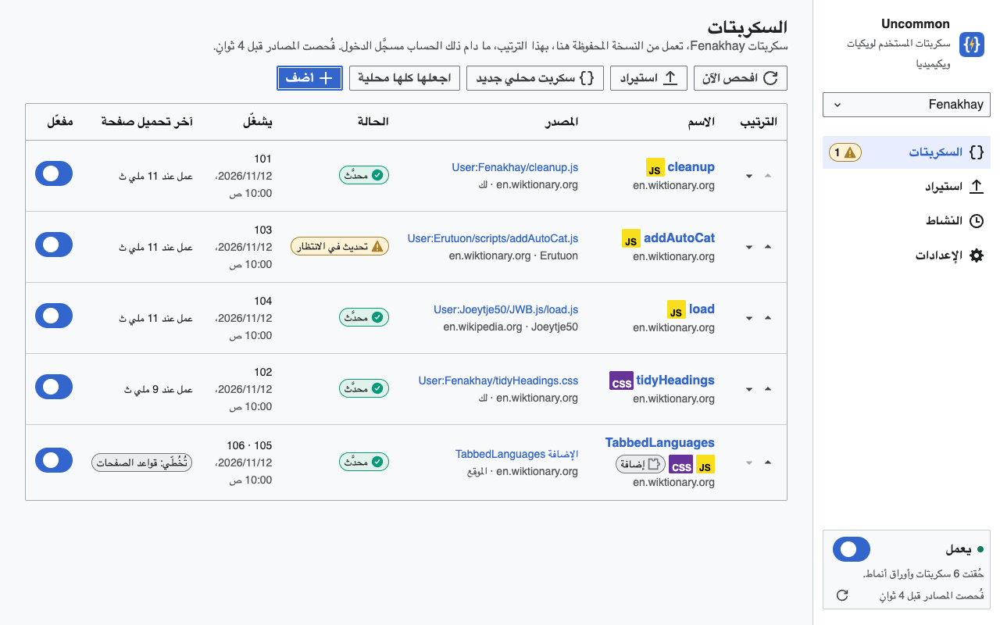
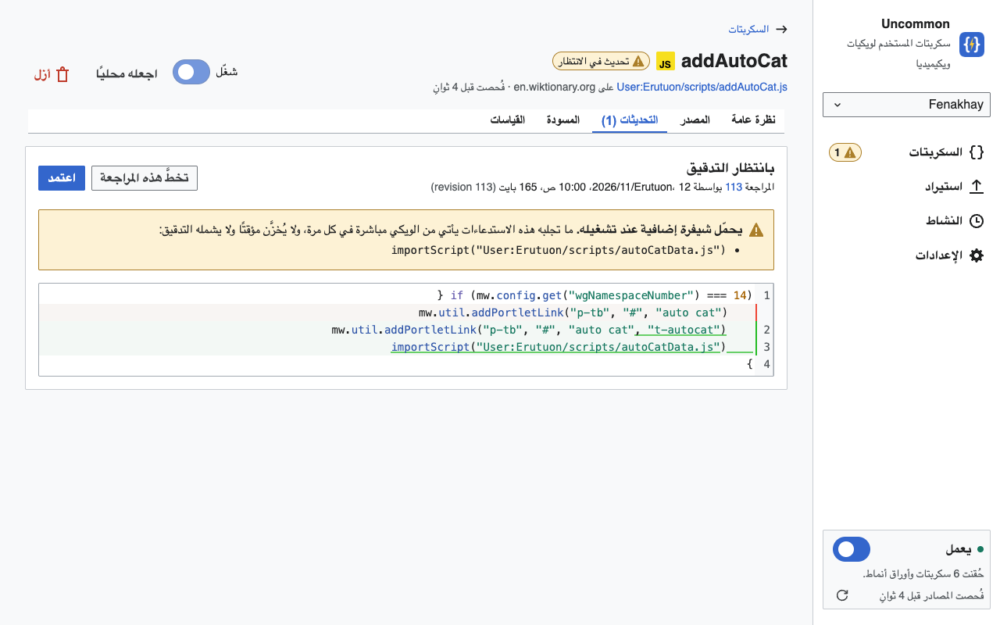

التثبيت
قريبًا على Chrome Web Store وFirefox Add-ons وMicrosoft Edge Add-ons.
يشغّل Uncommon سكربتات المستخدم وأوراق الأنماط الخاصة بك على ويكيميديا من نسخة محفوظة في متصفحك، بدلًا من صفحة common.js.
السكربت المحمَّل من common.js ينتظر في كل عرض صفحة سلسلة من الطلبات: الصفحة، ووحدة البدء، ووحدة user، ثم طلبًا إضافيًا لكل importScript. أما Uncommon فيحفظ نص كل سكربت في المتصفح، فيحقنه المتصفح قبل سكربتات الصفحة نفسها. ولا ينتظر السكربت إلا ما يحتاج إليه من الصفحة، ولا يُرسل أي طلب لجلب السكربت نفسه.
- الملفات الشخصية: ملف لكل حساب ويكي. لا تعمل سكربتات الملف الشخصي إلا ما دام ذلك الحساب مسجَّل الدخول، وعلى الويكيات التي تختارها: ويكي واحد أو عدة ويكيات أو كل ويكيات ويكيميديا.
- الاستيراد: يقرأ common.js أو common.css أو global.js أو global.css الخاصة بك، ويسرد كل صفحة تحمّلها، ويضيف ما تختاره منها.
- التحديثات: تتبع صفحاتك الويكي كلما حفظتها. أما مراجعة محرر آخر فتنتظر حتى تقرأ الفرق وتعتمدها، وتواصل المراجعة المعتمدة العمل في الأثناء.
- الإضافات: أضف إضافة من الويكي الأساسي سجلًا واحدًا، بسكربتاتها وأنماطها.
- المسودات: جرّب التغيير في المتصفح قبل حفظه في الويكي.
- قواعد الصفحات: شغّل السكربت في نطاقات أو إجراءات أو صفحات خاصة أو نماذج محتوى معيّنة فقط.
- النشاط: اعرف متى عمل كل سكربت في آخر 200 تحميل صفحة، ولماذا تُخطّي أحدها أو فشل.
لا يمكن إضافة إلا الصفحات الفرعية من User: وصفحات MediaWiki:، وهي صفحات لا يعدّلها إلا صاحبها أو إداريو الويكي. يقرأ Uncommon واجهة Action API للويكيات دون تسجيل دخول، ولا شيء غيرها. ولا يعدّل أي ويكي أبدًا ولا يرسل شيئًا إلى أي جهة: تبقى سكربتاتك وإعداداتك وتقاريرك في متصفحك.
قبل أن يشغّل السكربتات، يطلب منك المتصفح السماح بسكربتات المستخدم. في كروم وإيدج، فعّل «Allow User Scripts» في صفحة تفاصيل الامتداد؛ وفي فايرفوكس، اختر «اسمح» في لوحة التحكم. وتعرض لوحة التحكم الخطوات.
يتوفر Uncommon بالإنجليزية والفرنسية والعربية والألمانية والهولندية والمالطية.

